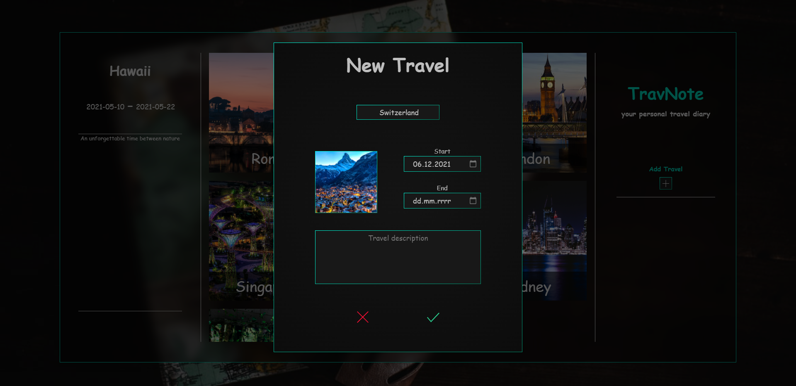
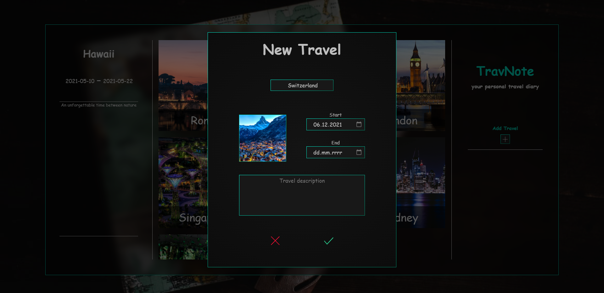

Daniel
Bober
Dwa lata temu dość spontanicznie zainteresowałem sie tworzeniem gier, co doprowadziło do tego że aktualnie uczę się także Front-Endu. Chwilowo odstawiłem jednak GameDev na rzecz tego drugiego. Wszystkiego uczę się sam, najczęściej po godzinach i w weekendy.


 
